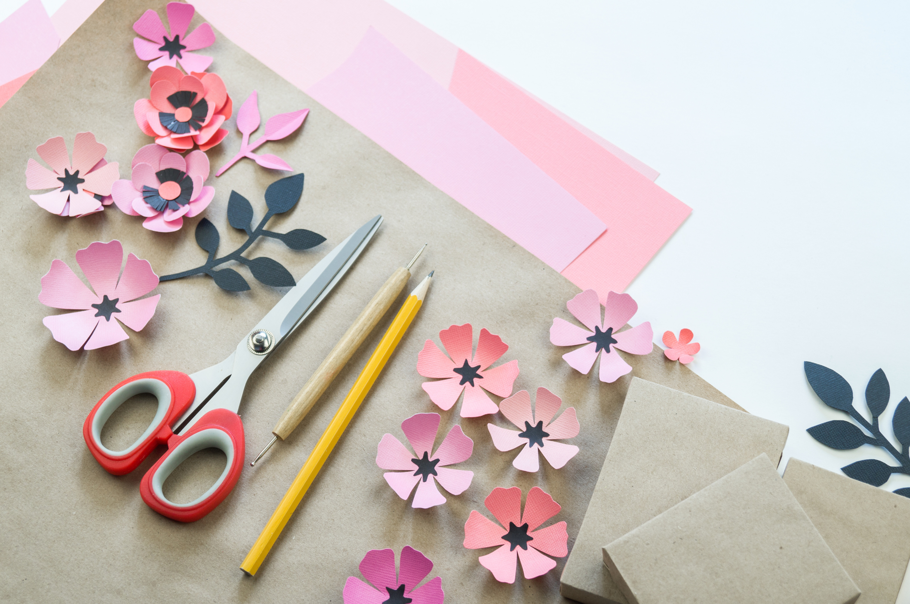

Drop in for Craft & Caffeine.
Come for craft, a cuppa and company from Monday to Wednesday. A gold coin donation for supplies is appreciated.
Your local creative community
Make something, learn a skill or simply enjoy the company.


MON TO WEDCraft & Caffeine is a place to build confidence, practise skills and feel part of the community.
Creating Villages facilitates Cafe QB with Quantin Binnah Community Centre. Volunteers support the cafe and work skills training for people with disability.Ask the team about current sessions. Program schedules change during the year and pause for school holidays.
Come for craft, a cuppa and company from Monday to Wednesday. A gold coin donation for supplies is appreciated.
Inclusive creative programs designed around social connection.
Hands on programs for children and families.
Food, conversation and community in one welcoming space.
Come and say hello
Craft & Caffeine is inside Cafe QB at Quantin Binnah Community Centre.